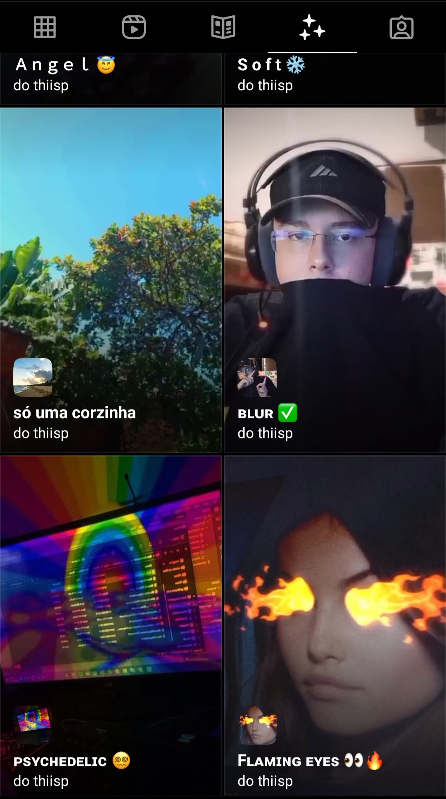

Thiisp Dev 🥷🏻
Início
Sobre
Redes Sociais
Filtros
Área de Filtros
Você deseja ter um filtro no seu perfil do Instagram?

Os Filtros podem deixar a pessoa mais famosa na rede social, já que levam o nome do criador!
Além disso, são ótimos para engajar e trazer à tona diversos assuntos da atualidade.
Site desenvolvido por:
@thiisp
ajuda (não clique)